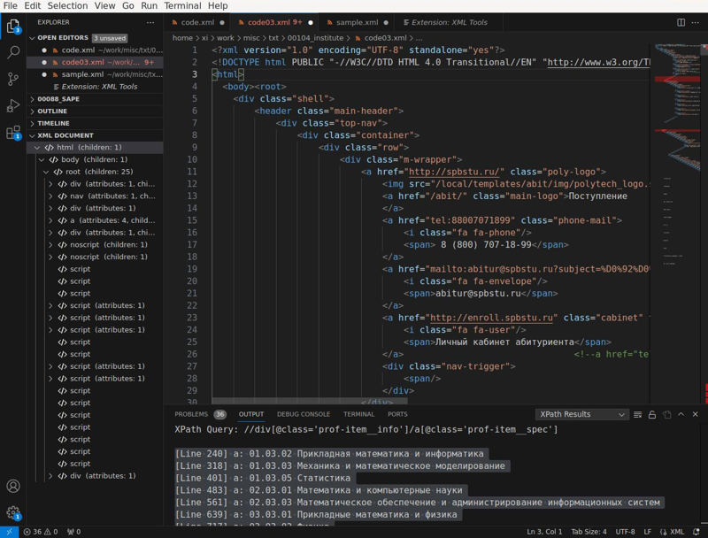
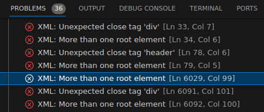
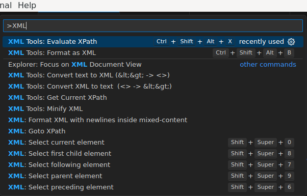

Чтобы в VSCode появились инструменты, позволяющие работать с XML-файлами, необходимо установить два плагина:
Навигация по XML-файлу
Один из этих плагинов добавит в область Explorer раздел XML DOCUMENT. В этом разделе в древовидном виде станет отображаться структура XML-файла (если, конечно, файл корректный). Кликая на дерево, можно быстро перепрыгивать к нужной части XML-документа.

Если XML-файл читается XML-парсером, но в нем есть ошибки структуры, то эти ошибки будут доступны во вкладке Problems внизу экрана:

Форматирование XML-кода (XML бъютифайер)
Чтобы отформатировать XML-документ с правильными отступами и переводом строк, в которых написаны теги, надо выделить весь текст сочетанием Ctrl+A. Затем делается клик левой кнопкой мыши, и в контекстном меню выбирается пункт Format Document. (То же самое можно сделать по сочетанию клавиш Ctrl+Shift+I).
Внимание! Если файл большой, то вначале будет казаться, что ничего не происходит. Интерфейс продолжает работать, ничего не зависает, как будто никакой команды на форматирование не давалось. На самом деле, форматирование запускается в фоновом процессе, и когда оно завершится, файл на экране будет изменен. Поэтому стоит просто подождать несколько секунд пока не будет виден результат.
Выборка узлов по XPath-запросу
Чтобы сделать выборку через XPath запрос, необходимо вызвать соответствующую команду. Делается это следующим образом.
Вначале вызывается Палитра команд. Для этого в меню нажимается:
View - Command Palette
Или можно просто нажать Ctrl+Shift+P.
В открывшейся строке ввода надо набрать строку "XML" и дальше выбрать инструмент с названием:
XML Tools: Evaluate XPath
Выбор инструмента будет выглядеть примерно так:

После выбора инструмента надо нажать Enter.
Появится окно, куда необходимо ввести строку запроса XPath:
И после нажатия Enter, в окне Output появится содержимое (text content) тех DOM-элементов, которые попали в выборку данного XPath-запроса. Выборка будет показана в виде текстового вывода:
XPath Query: //div[@class='prof-item__info']/a[@class='prof-item__spec']
[Line 240] a: Прикладная математика и информатика
[Line 318] a: Механика и математическое моделирование
[Line 401] a: Статистика
[Line 483] a: Математика и компьютерные науки
[Line 561] a: Математическое обеспечение и администрирование информационных систем
К сожалению, быстро прыгнуть на какой-нибудь найденный узел с помощью мышки не получится. Пока что видно только одно решение этой задачи: нажать Ctrl+G или в меню выбрать:
Go - Go To Line/Column
И в появившемся поле ввода написать необходимый номер строки и нажать Enter. Редактор VSCode перенесет курсор на заданную строку.